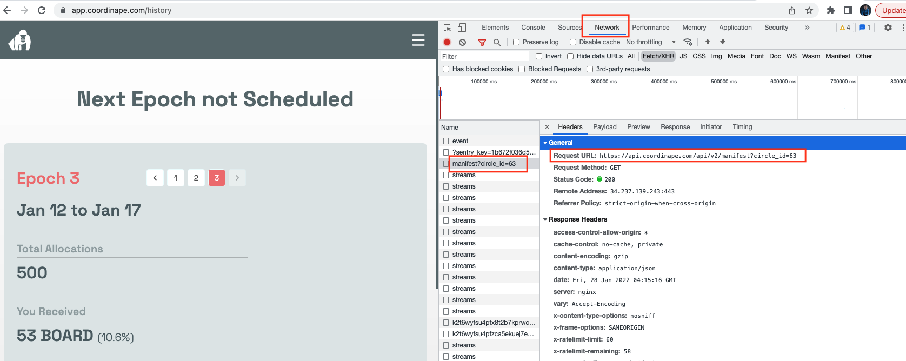
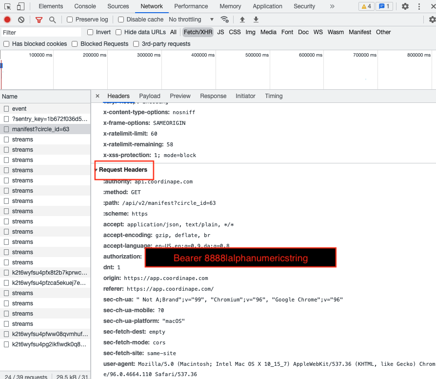
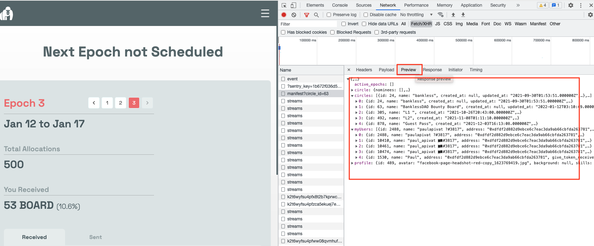

Using Inspect Element to Grab API Endpoints and Tokens
Grab API info with inspect element
Introduction
When maintaining data pipelines, sometimes API endpoints get changed or authorization tokens expire prompting a need to grab new API endpoints and bearer tokens.
This post provide a brief walk-through on how to use Inspect Element on a web browser to grab this data. Which represents a powerful way to access a project’s API before reaching out to the team.
Scenario
We have a data pipeline to ingest
Coordinape data but after two months, the pipeline script returns a Response 401 error, suggesting a connection could not be made. We want a way to explore what’s going on.
API Endpoint with Inspect Element
We go to the Coordinape application and sign-in with our Ethereum wallet. Then, I left click on go to inspect element, navigating to the Network tab as shown here:

Once in the Network tab, select Fetch/XHR (XHR stands for XMLHttpRequest, but XML is phased out for JSON). Then we should see a list of events.
The event highlighted in red indicates a Request URL that shows the current API endpoint (in Header)
Here’s the endpoint: https://api.coordinape.com/api/v2/manifest?circle_id=63 (note&: in the old endpoint, manifest was token-gifts. It looks like the team has consolidated it’s API endpoints)
Authorization
To grab the authorization, bearer token, scroll down in Header down to Request Headers:

This is the information you’d store in the .env file.
Data Structure
Finally, you can also get a sense for what kind of data will be returned with this new API endpoint by navigating to the Preview tab next to Headers.

Here we see circle, circles, myUsers and profile. It looks like we have nested JSON that will need to be flattened.
For more use of data to explore DAOs and web3 find me on Twitter.
Paul Apivat
data in web3
My interests include data science, machine learning and R/Python programming.